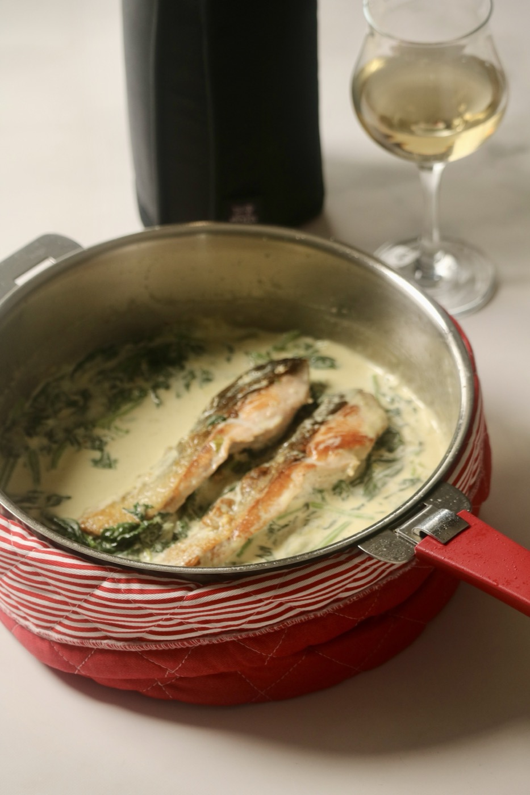

Aya Chef — Une Semaine
土曜に1回買って、30分だけ仕込む

火曜の鮭のクリーム煮。生クリームは煮立てないでくださいね、分離してしまうので
献立でいちばん疲れるのは、作ることではなくて「決めること」なんですよね。
なので、1週間ぶんを先に決めてしまいました。
買い物は土曜に1回だけ。仕込みも土曜の30分だけです。
あとは、書いてあるとおりに作るだけで平日が終わります。
01
買い物1回と、仕込み30分
下のリストのとおりに買って、ポタージュを1つ作って冷蔵庫へ。これだけで平日の自分が助かります照り焼きガーリックレモンチキン
＋ きのこのバター醤油ごはん
鮭のクリーム煮
＋ 餃子の皮のキッシュ
豚ロースのマスタードロール
＋ さつまいものポタージュ
鯛のポワレ ブールブラン
＋ 大葉とじゃこのレモンごはん
大葉ジェノベーゼのそうめん
＋ クリームチーズと漬物
お休み、または残ったもので
作らない日があっていいと思っています。1週間ぜんぶ作らなくて大丈夫です02
03
さつまいものポタージュを作る（20分）
水曜に温めるだけで出せます。冷蔵で4日もちます大葉ジェノベーゼを作る（5分）
大葉とオリーブオイルとにんにくを混ぜるだけ。金曜のそうめんに使います鶏ももに下味をつけて冷蔵庫へ（5分）
月曜の自分が、いちばん楽になりますAya Fukazawa — Cuisine de Tous les Jours